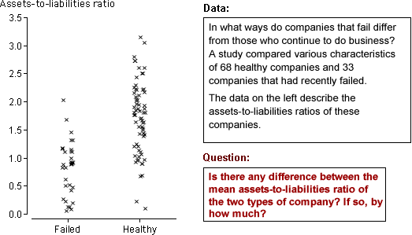

Interest in comparing two groups
We often want to compare individuals (or other units) from two groups. If a numerical value is recorded from each individual, the resulting data consist of two batches of numbers — one from each group. Differences between the distributions of values in the two groups are often of interest.
| 'Individuals' | Measurement | Groups | Question |
|---|---|---|---|
| Customers in a supermarket | Amount spent (dollars) | Male and female | Do male and female customers spend the same amounts? |
| Bank accounts | Number of transactions in month | Two types of account with different fee structures (one with lower per-transaction charge and the other with lower fixed charge) | Are there more transactions in accounts with lower per-transaction charges? By how much? |
| '2 litre' milk containers | Volume of milk in container | Two different bottling plants | Do both plants fill the containers with the same amount of milk on average? |
Questions are often about underlying populations
The questions in the above scenarios are not about the specific customers who entered the supermarket, the specific bank accounts that were sampled, etc. They ask about the differences between supermarket spending by males and females in general, the differences between the two types of bank account in general, etc.
We are therefore usually interested in the characteristics of a population or process that we assume underlies the data that are collected. The data provide information about the likely characteristics of the population.
Examples
The diagram below shows a few data sets in which values are in two groups.

Note that the red questions do not refer to the specific individuals in the study, but ask about differences between the groups 'in general' — we would like to use the answers to predict what will happen to other individuals.